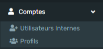
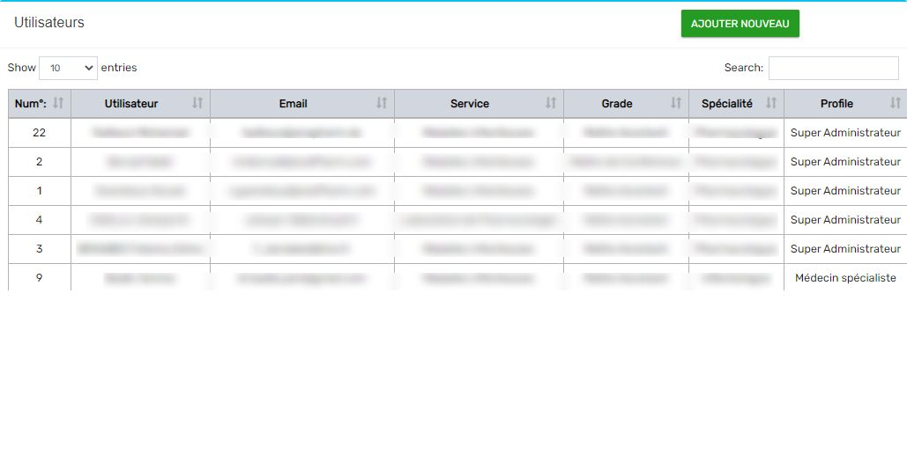
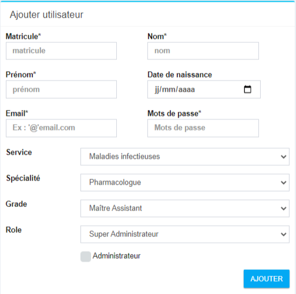

Guide Complet Administrateur
Cette documentation est réservée pour l'administration de l'application AnaPharmDz
Compte

La gestion des comptes utilsateurs et leurs profils.
Utilisateurs Internes
Gestion des comptes utilisateurs
Liste des utilisateurs

Tableau des utilisateurs enregistré par l'administrateur. Le tableau affiche :
- Utilisateur Nom et prénom de l'utilisateur
- Email Email de l'utilisateur pour se connecté à l'application
- Service Le service de l'utilisateur ou il est affecté.
- Grade Grade de l'utilisateur
- Spécialité Spécialité de l'utilisateur
- Profile Le profile de l'utilisateur qui définit ses droits d'accés. Voir Profiles.
- Avant dernière connexion La date et l'heure de l'avant dernière connexion de l'utilisateur.
- Dernière connexion La date et l'heure de la dernière connexion de l'utilisateur.
- Status Status de connexion de l'utilisateur "Hors Ligne" ou "En ligne".
- Modifier Modifier les informations sur l'utilisateur.
- Supprimer Supprimer l'utilisateur.
Trier par colonne
Cliquez sur l'en-tête de n'importe quelle colonne dans les demandes pour trier les demandes selon cette colonne.
Faire une recherche
Tapez dans la barre de recherche search pour rechercher un élément dans le tableau.
La recherche s'effectue sur toute les colonnes d'ou leurs contenus corresponds au terme recherché.
Ajouter un utilisateur
Pour ajouter un nouveau utilisateur cliquer sur le boutton Nouveau

:warning: If you are using mobile browser: Be very careful here!